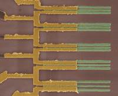
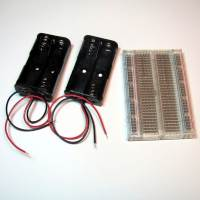
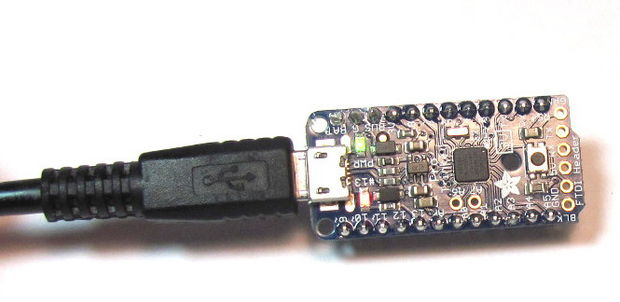
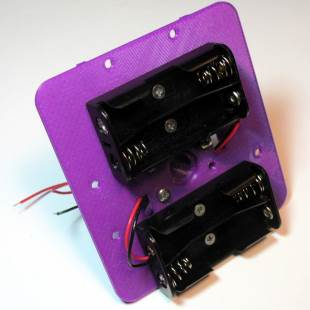
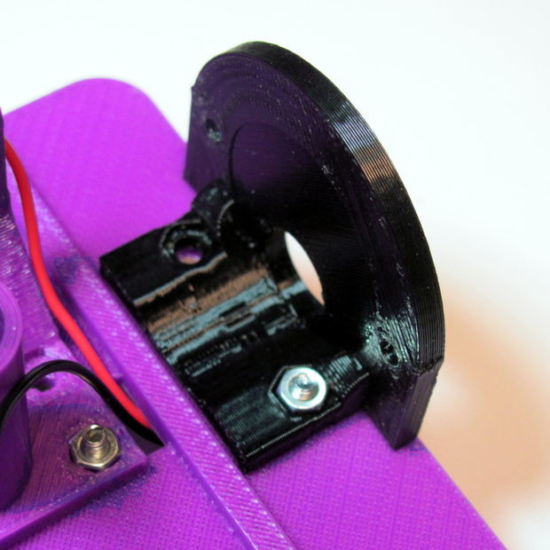

2015-10-13 - Nº 24
Editorial
Aqui está a Newsletter Nº 24 no seu formato habitual. Foram adicionados botões de partilha nas várias redes sociais, se gostar da Newsletter partilhe-a!
Esta Newsletter encontra-se mais uma vez disponível no sistema documenta do altLab. Todas as Newsletters encontram-se indexadas no link.
Esta Newsletter tem os seguintes tópicos:
Hoje é o dia da Ada Lovelace - considerada a primeira mulher programadora. A DELL vai comprar a EMC tornando-se num dos maiores fabricantes de Hardware do mundo. A Amazon lançou um plataforma dedicada ao IOT na sua cloud AWS. A NASA lançou um micro satélite para testar comunicações de laser no espaço. Na Newsletter desta semana iremos apresentar um projeto de maker que é robot programável que faz desenhos com uma caneta. Iremos construir um circuito que é um Medidor de Sinal (VU Meter).
João Alves ([email protected])
O conteúdo da Newsletter encontra-se sob a licença  Creative Commons Attribution-NonCommercial-ShareAlike 4.0 International License.
Creative Commons Attribution-NonCommercial-ShareAlike 4.0 International License.
Novidades da Semana ^
Dell and EMC to combine, creating premier end-to-end technology company
"Dell Inc. and EMC Corporation have signed a definitive agreement under which Dell, together with its owners, Michael S. Dell, founder, chairman and chief executive officer of Dell, MSD Partners and Silver Lake, the global leader in technology investing, will acquire EMC Corporation, while maintaining VMware as a publicly-traded company. The transaction creates the industry-leader in the extremely attractive high-growth areas of the $2 trillion IT market with complementary product and solutions portfolios, sales teams and R&D investment strategies. The transaction combines two of the world’s greatest technology franchises – with leadership positions in Servers, Storage, Virtualization and PCs – and brings together strong capabilities in the fastest growing areas of our industry, including Digital Transformation, Software Defined Data Center, Hybrid Cloud, Converged Infrastructure, Mobile and Security."
Amazon Web Services Announces AWS IoT
"Today at AWS re:Invent, Amazon Web Services, Inc. (AWS), an Amazon.com company (NASDAQ: AMZN), announced AWS IoT, a new platform that makes it easy for devices — cars, turbines, sensor grids, light bulbs, and more – to connect to AWS services so that companies can store, process, analyze, and act on the volumes of data generated by connected devices on a global scale. Devices connect to AWS IoT’s Device Gateway, and manufacturers can set rules for how AWS IoT handles the data they send, and the actions they take when various conditions are met (such as sending an alert when a pressure sensor reports an unusually high reading or a motion detector is triggered). Connected devices are usually operated via applications that communicate with them using APIs, but devices may not always be available to respond to API calls because of intermittent connectivity or because of power constraints. AWS IoT creates a virtual version, or “shadow” of each connected device that includes all of the information about the device’s state and is always available so that applications can check the device’s status and take actions that are automatically sent to the device once it reconnects. AWS IoT provides an SDK that makes it easy for developers to use the AWS IoT functionality from connected devices, and from mobile and web applications. A number of semiconductor manufacturers also have “Starter Kits” Powered by AWS IoT that embed the AWS IoT Device SDK and offer connectivity to AWS IoT out of the box. For more information about AWS IoT, visit https://aws.amazon.com/iot."
CubeSat to Demonstrate Miniature Laser Communications in Orbit

"NASA and The Aerospace Corporation of El Segundo, California, have received confirmation the Optical Communications and Sensor Demonstration (OCSD) CubeSat spacecraft is in orbit and operational. OCSD launched aboard an Atlas V rocket Thursday from the Vandenberg Air Force Base in California. OCSD is the first in a new series of six NASA-managed technology demonstration missions set to launch during the coming months using CubeSats to test technologies that can enable new uses for these miniature satellites, which measure 10 cm x 10 cm x 10 cm (about 4 inches per side). NASA, other government agencies, academia and commercial companies can incorporate these technologies, which range from high-speed communications to novel propulsion systems to technologies that enable rendezvous and docking, into future space missions."
Ciência e Tecnologia ^
IBM Research Breakthrough Paves Way for Post-Silicon Future with Carbon Nanotube Electronics

"IBM today announced a major engineering breakthrough that could accelerate carbon nanotubes replacing silicon transistors to power future computing technologies. IBM scientists demonstrated a new way to shrink transistor contacts without reducing performance of carbon nanotube devices, opening a pathway to dramatically faster, smaller and more powerful computer chips beyond the capabilities of traditional semiconductors. The results will be reported in the October 2 issue of Science (DOI: 10.1126/science.aac8006)."
University of Oslo Master’s Student Creates Amazing Open Source 5-Axis 3D Printer
"FDM/FFF 3D printers, we typically picture a gantry style Cartesian-based machine, or a Delta robot style printer. These machines are capable of 3D printing objects based on three axes: X, Y, and Z. The X and Y axes make up the two-dimensional plane, while the Z axis is the third dimension, allowing for objects to be built up one layer at a time. For one University of Oslo Master’s student, named Øyvind Kallevik Grutle, this just wasn’t enough."
A two-qubit logic gate in silicon
"Quantum computation requires qubits that can be coupled in a scalable manner, together with universal and high-fidelity one- and two-qubit logic gates. Many physical realizations of qubits exist, including single photons, trapped ions, superconducting circuits5, single defects or atoms in diamond and silicon, and semiconductor quantum dots, with single-qubit fidelities that exceed the stringent thresholds required for fault-tolerant quantum computing10. Despite this, high-fidelity two-qubit gates in the solid state that can be manufactured using standard lithographic techniques have so far been limited to superconducting qubits5, owing to the difficulties of coupling qubits and dephasing in semiconductor systems. Here we present a two-qubit logic gate, which uses single spins in isotopically enriched silicon and is realized by performing single- and two-qubit operations in a quantum dot system using the exchange interaction, as envisaged in the Loss–DiVincenzo proposal. We realize CNOT gates via controlled-phase operations combined with single-qubit operations. Direct gate-voltage control provides single-qubit addressability, together with a switchable exchange interaction that is used in the two-qubit controlled-phase gate. By independently reading out both qubits, we measure clear anticorrelations in the two-spin probabilities of the CNOT gate."
Modelos 3D ^
Com a disponibilidade de ferramentas que permitem dar azo a nossa imaginação na criação de peças 3D e espaços como o thingiverse para as publicar, esta rubrica apresenta alguns modelos selecionados que poderão ser úteis.
Parametric Fixing Table Leg -OpenScad (http://www.thingiverse.com/thing:585325)
This 's my parametric Fixing Table Leg.
if you like !!! Please !!! make it one and post it
You can chose
Width and length Leg Width and length support Leg : cylinder or cube/rectangle Thickness wall Screw diameter Head screw diameter or hex Height head screw The number of screws for fixing leg The number of screws for width and length You will therefore be able now with the customizer of realize your Fixing Table Leg.
Now, you have more excuses to tinker (;
update, you can chose cutting the cylinder at 45°. This function is a work-in-progress ( thank you to Daegs for your comment.
If you are having any difficulties, need advices or you want me to make changes, I remain at your disposal.
If you want to learn OpenSCAD you can follow these video tutorials : http://www.thingiverse.com/thing:656880
Tapered Pocket Coin-Op (http://www.thingiverse.com/thing:12348)

I thought the Pocket Coin-op would look nicer with some tapered edges. the rounding also makes the opener lighter and speeds up the print a little.
The thickness, coin-size, and taper are all adjustable in the scad. I didn't bother to test changing the other variables as I'm pretty happy with that geometry.
Bonus: Are you full of jealousy seeing all these dualstrusion parts popping up everywhere? well now you can stick it to the man with a three color bottle opener!
Box with Hexagonal Holes (http://www.thingiverse.com/thing:21593)
This is a derivative of thing:21358, Parametric Decorated Box. Material has been removed from all six sides leaving holes that form a hexagonal pattern - see image at the left.
An interesting fact about the Thingomatic is that plastic is saved if holes are cut in the model; there is no waste, no shavings to throw away. Netfabb Studio reports that the holed box plus lid has a volume of 16.5 cubic centimeters while the solid box plus lid has a volume of 24.5 cubic centimeters; a saving in material of about 30%. The hexagonal pattern makes the box an attractive and interesting object rather like those pad and pencil holders sold in office supply stores that are made of wire mesh.
Three stl files are included:
box_with_holes_05.stl, basic box with holes on all five sides box_with_holes_04.stl, the box with a solid bottom and holes on four sides lid_with_holes.stl, the lid with holes
Two scad files are included
box_with_holes.scad, the file which made the two boxes see comments in the file lid_with_holes.scad, the file which makes the lid
The openSCAD forms used to make the holes were constructed from three dimensional hexagons properly positioned in a larger hexagonal array. Thus the unsubtracted material forms the desired graphite like structure - see thing:13672.
Circuitos ^
Aqui é apresentado um circuito simples que poderá ser construído com componentes.
Medidor de Sinal (VU Meter)
Hoje será construído um circuito usando um IC LM3915 e que permite representar de forma visual a intensidade de um sinal de audio.
O LM3915 tem uma amplitude de 30 dB sendo os 10 LEDs ativados em intervalos de 3 dB.
Se quiserem ter uma escala ainda maior podem emparelhar vários LM3915. Vejam na datasheet como fazê-lo. Podem adicionalmente usar o LM3914 e o LM3916 que tendo o mesmo footprint apresentam resultados diferentes - o primeiro é um display linear e o segundo um VU Meter entre -20 e 3 dB.
Esquemático
Componentes (BOM):
Circuito:
- 1x IC LM3915 (U1)
- 1x Resistência Variável de 10K Ohms (R1)
- 1x Resistência de 1K Ohms (R2)
- 5x LEDs de 5mm Vermelhos (D1 a D5)
- 5x LEDs de 5mm Verdes (D6 a D10)
- 1x Pilha de 9V
- 1x Jack de Audio (Audio-/Audio-)
Pin-out dos IC/Componentes
Nota: Se precisarem de criar um IC para o Kicad consultem como fazer na Newsletter Nº 23.
Links úteis:
- Tutorial – LM3915 Logarithmic Dot/Bar Display Driver IC
- Dot/Bar Display Driver Hookup Guide
- 4060B 14-stage ripple-carry binary counter/divider and oscillator
Artigo do Maker ^
Projeto interessante publicado por um maker.
Low-Cost, Arduino-Compatible Drawing Robot
O projecto de maker da semana é um robot que faz desenhos. Este projeto foi feito pela equipa do MB - The Maker's Box (Link) e encontra-se publicado no instructables.
Trata-se de um robot que tem acoplada uma caneta e que ao deslocar-se faz desenhos.
Introdução
O projeto foi desenhado para uma workshop de 10 horas para o ChickTech.org. Os objetivos para o projecto eram:
- Fácil de construir
- Fácil de programar
- Que fizesse algo interessante
- Baixo custo
Com estes objetivos em mente foram feitas algumas escolhas técnicas:
- Utilização do Arduino para a programação
- 4x Baterias AA pelo custo e disponibilidade
- Motores do tipo Stepper para a precisão
- Impressão 3D das peças para fácil costumização
- Plotagem com caneta com gráficos tipo turtle para outputs interessantes
- Ser open-source para que outros pudessem construir.
A inspiração foi do http://mirobot.io.
Passo 1 - Peças

Eletrónica:
- 1x Trinket 3V
- 2x Stepper 5V com Engrenagem
- 1x ULN2803 Darlington Driver
- 1x breadboard tamanho médio
- 16x fios Macho-macho
- 1x Micro servo
- 1x Header Macho
- 2x caixas para 2 x Baterias AA
- 1x cabo USB micro
- 4x Baterias AA
Nota: No fim é apresentado como fazer o projeto com o Arduino ou com o Raspberry Pi.
Hardware:
- 2x Aros de 7/8" com espessura de 3/16"
- 1x Esfera de 5/8"
- 10x Parafusos M3 x 8mm cabeça redonda
- 4x Parafusos M3 x 6mm cabeça achatada
- 12x Porcas M3
Peças Impressas:
- 1 x Encastre para a esfera
- 1 x Chassis
- 2 x Rodas
- 2 x suporte de Stepper
- 1 x suporte de caneta / servo
- 1 x anel para a caneta
Ferramentas:
- Chave Phillips
- Pistola de cola Quente
- Multímetro digital
- Faca afiada
- Marcadores/Canetas
Passo 2 - Carregar o Firmware

Antes de começarmos a construção do robot iremos carregar o software no micro-controlador. O programa de teste apenas desenha caixas para que se possa verificar se as direcções e dimensões estão corretas.
Nota: A placa usada (Trinket) requer que seja carregado no botão de reset antes de fazer o envio do sketch.
O sketch pode ser descarregado daqui:
// Download and install Trinket Pro drivers from
// https://learn.adafruit.com/introducing-pro-trinket/starting-the-bootloader
// [Tools] -> [Programmer] -> "USBtinyISP"
// [Tools] -> [Board] -> "Pro Trinket 3V/12 Mhz (USB)"
#include <Servo.h>
// setup servo
int servoPin = 8;
int PEN_DOWN = 170; // angle of servo when pen is down
int PEN_UP = 80; // angle of servo when pen is up
Servo penServo;
int wheel_dia=66.25; // # mm (increase = spiral out)
int wheel_base=112; //, # mm (increase = spiral in)
int steps_rev=128; //, # 512 for 64x gearbox, 128 for 16x gearbox
int delay_time=6; // # time between steps in ms
// Stepper sequence org->pink->blue->yel
int L_stepper_pins[] = {10, 12, 13, 11};
int R_stepper_pins[] = {3, 5, 6, 4};
int fwd_mask[][4] = {{1, 0, 1, 0},
{0, 1, 1, 0},
{0, 1, 0, 1},
{1, 0, 0, 1}};
int rev_mask[][4] = {{1, 0, 0, 1},
{0, 1, 0, 1},
{0, 1, 1, 0},
{1, 0, 1, 0}};
void setup() {
randomSeed(analogRead(1));
// put your setup code here, to run once:
Serial.begin(9600);
for(int pin=0; pin<4; pin++){
pinMode(L_stepper_pins[pin], OUTPUT);
digitalWrite(L_stepper_pins[pin], LOW);
pinMode(R_stepper_pins[pin], OUTPUT);
digitalWrite(R_stepper_pins[pin], LOW);
}
penServo.attach(servoPin);
Serial.println("setup");
}
void loop(){ // draw a calibration box 4 times
pendown();
for(int x=0; x<12; x++){
forward(100);
left(90);
}
penup();
done(); // releases stepper motor
while(1); // wait for reset
}
// ----- HELPER FUNCTIONS -----------
int step(float distance){
int steps = distance * steps_rev / (wheel_dia * 3.1412); //24.61
/*
Serial.print(distance);
Serial.print(" ");
Serial.print(steps_rev);
Serial.print(" ");
Serial.print(wheel_dia);
Serial.print(" ");
Serial.println(steps);
delay(1000);*/
return steps;
}
void forward(float distance){
int steps = step(distance);
Serial.println(steps);
for(int step=0; step<steps; step++){
for(int mask=0; mask<4; mask++){
for(int pin=0; pin<4; pin++){
digitalWrite(L_stepper_pins[pin], rev_mask[mask][pin]);
digitalWrite(R_stepper_pins[pin], fwd_mask[mask][pin]);
}
delay(delay_time);
}
}
}
void backward(float distance){
int steps = step(distance);
for(int step=0; step<steps; step++){
for(int mask=0; mask<4; mask++){
for(int pin=0; pin<4; pin++){
digitalWrite(L_stepper_pins[pin], fwd_mask[mask][pin]);
digitalWrite(R_stepper_pins[pin], rev_mask[mask][pin]);
}
delay(delay_time);
}
}
}
void right(float degrees){
float rotation = degrees / 360.0;
float distance = wheel_base * 3.1412 * rotation;
int steps = step(distance);
for(int step=0; step<steps; step++){
for(int mask=0; mask<4; mask++){
for(int pin=0; pin<4; pin++){
digitalWrite(R_stepper_pins[pin], rev_mask[mask][pin]);
digitalWrite(L_stepper_pins[pin], rev_mask[mask][pin]);
}
delay(delay_time);
}
}
}
void left(float degrees){
float rotation = degrees / 360.0;
float distance = wheel_base * 3.1412 * rotation;
int steps = step(distance);
for(int step=0; step<steps; step++){
for(int mask=0; mask<4; mask++){
for(int pin=0; pin<4; pin++){
digitalWrite(R_stepper_pins[pin], fwd_mask[mask][pin]);
digitalWrite(L_stepper_pins[pin], fwd_mask[mask][pin]);
}
delay(delay_time);
}
}
}
void done(){ // unlock stepper to save battery
for(int mask=0; mask<4; mask++){
for(int pin=0; pin<4; pin++){
digitalWrite(R_stepper_pins[pin], LOW);
digitalWrite(L_stepper_pins[pin], LOW);
}
delay(delay_time);
}
}
void penup(){
delay(250);
Serial.println("PEN_UP()");
penServo.write(PEN_UP);
delay(250);
}
void pendown(){
delay(250);
Serial.println("PEN_DOWN()");
penServo.write(PEN_DOWN);
delay(250);
}
Passo 3 - Suporte da caneta e suporte das baterias

- Instalar o suporte de canetas com o suporte do servo no lado mais curto do chassis.
- colocar as porcas no lado de cima do chassis
- Aparafusar os suporte das baterias na parte de baixo do chassis usando os parafusos 3Mx6mm de cabeça achatada.
- Passar os cabos das baterias pelos buracos existentes (ambos)
Notas: quando não foi indicado deverão ser usados os parafusos de 3Mx8mm cabeça redonda
Passo 4 - Rodas
- Testar se a roda encaixa no Stepper
- Se estiver demasiado apertada aquecer a ponta do Stepper com uma pistola de ar quente
- Se estiver demasiado solto pode ser usado um parafuso 3Mx8mm para a apertar um com o outros
- Se fôr um perfecionista, calibre a impressora para obter a peça correta.
- Colocar o aro a volta da roda
- Fazer a mesma operação na outra roda.
Passo 5: Suportes dos Steppers

- Colocar a porca no suporte do Stepper e apertá-la no topo do chassis com um parafuso.
- Colocar o stepper no suporte e aparafusá-lo com porcas e parafusos.
- Repetir o processo para o outro suporte.
Passo 6: Esfera
- Inserir a esfera no suporte
- Tentar não forçar pois pode partir. Tente usar uma pistola de ar quente para amaciar o material
- Aparafuse o suporte da esfera na parte de baixo do chassis a frente do suporte de baterias.
Passo 7: Breadboard
- Remover um dos lados das pistas de energia com uma faca cortando até ao adesivo
- Colocando a breadboard em cima dos carris do chassis, marque as linhas
- Com uma linha direita marque as linhas e corte para expor o adesivo
- Coloque a breadboard no chassis colocando o adesivo exposto em cima dos carris.
Passo 8: Energia
Coloque o micro-controlador, o driver Darlington e interruptor de alimentação na breadboard. As marcas laranjas representam o seguinte:
- Pino 1 do driver Darlington
- Pino da bateria do micro-controlador
- Posição ligada do interruptor de alimentação
Com a bateria da direita:
- Ligue o fio vermelho no primeiro pino do interruptor de alimentação
- Ligue o fio preto para uma linha vazia entre o micro-controlador e o driver Darlington
- Com a bateria do lado esquerdo:
- Ligue o fio vermelha na mesma linha que o fio preto da outra bateria
- Ligue o fio preto no trilho negativo da breadboard.
- Ligar a energia do micro-controlador:
- Liguei o cabo vermelho do trilho positivo ao pino da bateria (ponto laranja, Imagem 4).
- Ligue o cabo preto do trilho negativo ao pino marcado "G" (imagem 4).
- Coloque as baterias e ligue o interruptor. Deverá ver as luzes verdes e vermelhas do controlador a acenderem(imagem 5).
Resolver problemas: Se as luzes de micro-controladores não acenderem, desligue imediatamente a energia e verifique:
- Baterias instaladas na orientação correta?
- Verifique os fios da Bateria.
- Verifique os fios do Interruptor.
- Use um multímetro para verificar a voltagem da bateria.
- Use um multímetro para verificar a voltagem de alimentação do trilho.
Passo 9: Headers e ligações dos servos
Os headers Macho permitem ligar os conectores de 5 pinos do servo JST }a energia e ao driver Darlington:
- O primeiro header de 5 pinos inicia uma linha à frente do driver Darlington.
- O segundo header dos servo deve ser alinhado com a extremidade do driver Darlington.
Antes que fique complicado de gerir, iremos começar a ligar o servo:
- Adicionar um header de 3 pinos para o servo na borda direita da seção dianteira da breadboard(imagem 2).
- Adicionar um cabo vermelho do pino central para o lado positivo do barramento de alimentação.
- Adicionar um cabo preto do pino externo para o lado negativo do barramento de alimentação.
- Adicionar um cabo colorido do pino interior para o pino 8 do micro-controlador.
- Instale o servo com o eixo para a posição dos ponteiros do relógio completo e o braço que se estende até a roda do lado direito (Imagem 3)
- Instale o servo no suporte da caneta utilizando parafusos do servo (imagem 3).
- Ligue o conector servo alinhando as cores (imagem 4).
Passo 10: Controlo dos Stepper
- Ligue um fio preto do pino inferior direito do driver Darlington para o lado negativo do barramento de alimentação (imagem 1).
- Ligue um fio vermelho do pino superior direito do driver Darlington para o lado positivo do barramento de alimentação.
- Ligue um fio vermelho do cabeçalho pino superior esquerdo para o lado positivo do barramento de alimentação (Imagem 2).
- Ligue o conector do stepper esquerdo na parte esquerda do header com o fio vermelho no lado direito (imagem 3).
- Ligue o conector do stepper direito no header do lado direito, com a ponta no lado esquerdo.
Nota: O cabo vermelho do conector stepper é a energia e deve coincidir com os fios vermelhos na breadboard.
Passo 11: Controlo dos Stepper (Cont.)
- Começando com Pino 6 do micro-controlador, ligue os fios para quatro fios de controle para o motor de passo esquerdo (imagem 1).
- Combine esses jumpers para o lado da entrada do driver Darlington à direita. Todas as cores devem combinar com a exceção de verde, o que corresponde ao fio cor de rosa do stepper (imagem 2).
- Começando com o pino 13 do micro-controlador, ligue os fios para as quatro pontes do controle do motor de passo direito (de imagem (3).
- Combine esses fios para o lado da entrada do driver Darlington à esquerda. Todas as cores devem combinar com a exceção da verde, o que corresponde ao fio cor de rosa do stepper (imagem 3).
Passo 12: Teste e Calibração
O firmware de teste apenas desenha um quadrado. Para testar a sua construção faça o seguinte:
- Coloco o robot numa superfície lisa
- Ligue a energia
- verifique o robot a fazer quadrados
Se não está vendo leds a acender no micro-controlador, voltar e verificar o passo 8.
Se o robot não se mexer, verifique as ligações de energia para o driver Darlington no passo 9.
Se o robot se mexer de forma errática, verifique as ligações de pinos para o micro-controlador e para o driver Darlington no passo 10.
Se o robot se mover num quadrado aproximado, está na altura de colocar algum papel por baixo e colocar uma caneta nele (imagem 1).
Os seus pontos de calibração são:
int wheel_dia=66.25; // mm (increase = spiral out)
int wheel_base=112; // mm (increase = spiral in)
int steps_rev=128; // 128 for 16x gearbox, 512 for 64x gearbox
Começou-se com um diâmetro da roda de medição de 65 mm e é possível ver as caixas de rotação para dentro (Imagem 2).
Depois de aumentado o diâmetro de 67, é possível ver que estava girando para fora (imagem 3).
Finalmente com um valor de 66,25 milímetros (imagem 4). Você pode ver que há ainda algum erro inerente devido às engrenagens. No entanto já é perto o suficiente para fazer algo interessante!
Passo 13: Subindo e descendo a caneta
Foi adicionado um servo. Este permite subir e descer a caneta para que o robot possa deslocar-se sem desenhar.
Coloque o colar da caneta (imagem 1). Se ele estiver solto, fixe-o com fita no lugar. Verifique se ele vai tocar no papel quando o braço do servo desce. Verifique que não toca no papel quando levanta (imagem 2). Os ângulos do servo podem ser ajustados tanto pela remoção do suporte e re-posicionando-lo, ou através do software:
int PEN_DOWN = 170; // Ângulo de servo quando caneta está em baixo
int PEN_UP = 80; // Ângulo de servo quando caneta está em cima
Os comandos de caneta são:
penup ();
pendown ();
Passo 14: Divirtam-se!

Veja o video neste link
Outras plataformas
Poderia este robot ser feito com um Arduino normal? Sim! Ele foi feito com o Trinket por causa do baixo custo e do pequeno tamanho. Se se aumentar o comprimento do chassis, ]e possivel colocar o Arduino normal de um lado e a breadboard, no outro (imagem 1). Ele deve funcionar pino-a-pino com o sketch de teste, além disso, agora poderá usar a consola série para debug!
Poderia este robot ser feito com um Raspberry Pi? Sim! Essa foi a primeira linha de investigação, porque era interessante programar em Python, e ser capaz de controlá-lo através da web. Como o tamanho total ]e idêntico ao do Arduino, apenas coloque o Pi de um lado, e a breadboard, no outro (imagem 2). A energia passa a a ser um problema porque as 4 baterias não chegam. Vai ser preciso fornecer cerca de 1A de corrente com a tensão de 5V estável, caso contrário, o módulo WiFi vai parar de comunicar. Poderia usar-se o Modelo A que é melhor em termos de consumo de energia, mas ainda está a ser trabalhada a forma de fornecer energia convenientemente.
Outros artigos/projetos interessantes de ler
- USB PIC Programmer
- The OPEN MOTOR CONTROL: an open source motor controller for everyone
- serial over webaudio
- Temperature controlled craft beer coolbox
- Bluetooth Desk Lamp
- PiTank - A web controlled tank with cannon and live video stream
Compras ^
Artigos do ebay ou de outras lojas online que poderão ser úteis em projetos. A informação aqui presente apenas serve para ajudar na aquisição dos componentes. O altLab não tem qualquer intervenção/participação em qualquer negócio aqui apresentado.
5PCS LM3915 LM3915N LM3915N-1 IC DRIVER DOT BAR DISPLAY 18-DIP NEW GOOG LM2
(http://www.ebay.co.uk/itm/301724254150) - US $1.92
Gear Stepper Motor DC 5V 4 Phase Step Motor Reduction Step Motor For Arduino HC
(http://www.ebay.co.uk/itm/261661630869) - £1.06
Features:
- Gear Stepper Motor DC 5V 4 Phase Step Motor Reduction Step Motor For Arduino
- Brand new and high quality.
- Diameter: 27mm.
- Voltage: 5V.
- Step angle: 5.625 x 1/64.
- Reduction ratio: 1/64.
- 5 lines cable 4 phase stepper motor can be driven by ULN2003 chip.
- It also can be connected as 2 phase to use.
Specification:
- Original box: No
- Color: Silver
- Item size: 312719mm
- Net weight: 35g
- Package weight: 44g
Packing content:
- 1 x Stepper Motor
That's all Folks!